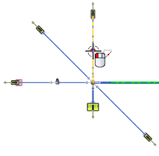
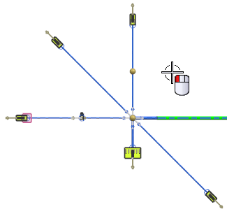
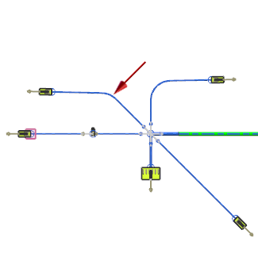

Bend the segments above the main branch
Bend another 4–pin segment in the same direction.
-
Select the 4–pin segment above the main branch.

-
Select the first pivot point.

-
Select the second pivot point.

The preview shows the bend result.

-
Click Apply.
-
Use the same technique to bend the last segment as shown.

-
Click OK when you have finished.
Tip
If you need to remove a bend from a segment, select Shape Segment , then select the segment, and from the Type list, select Line, followed by OK. You can also drag the segment’s angle back to the original value as you remove the bend.
Note
Shape Segment can be performed in the Drafting application. Make sure you update the drawing after you do this.